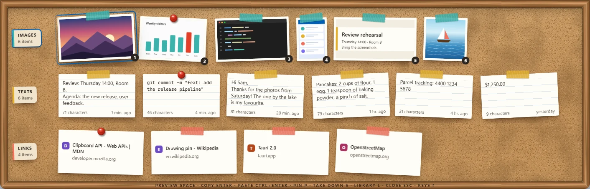
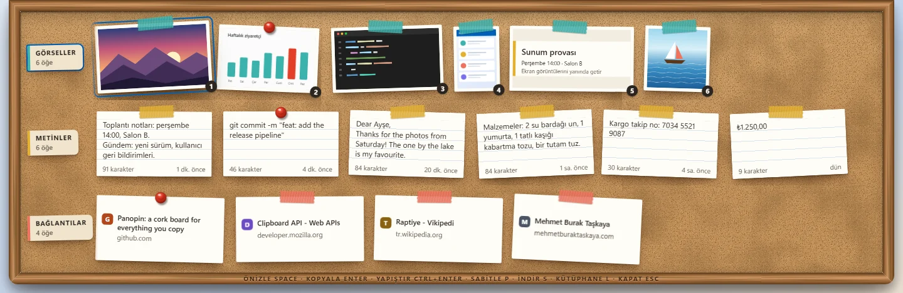
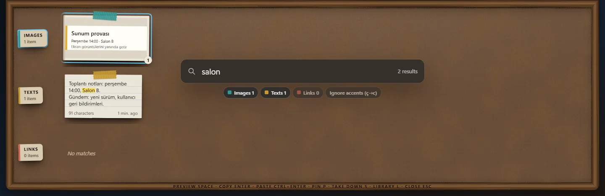
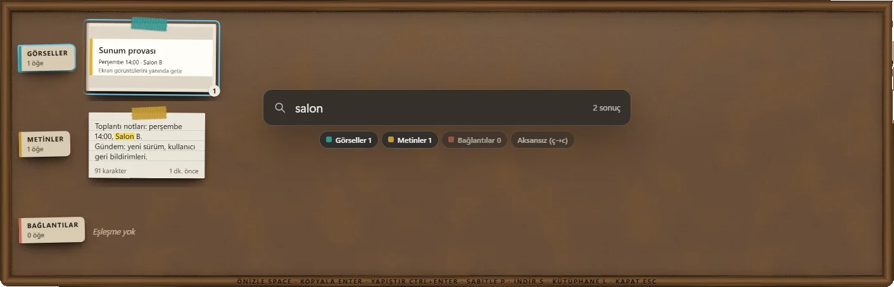

Everything you copy, pinned to a cork board. Kopyaladığın her şey, mantar panoda raptiyeyle.
Panopin quietly keeps the texts, links, images and screenshots you copy. Press Win+Alt+V, pick one with the keyboard, press Enter — and you are back where you were, with it on your clipboard. Panopin kopyaladığın metinleri, bağlantıları, görselleri ve ekran görüntülerini sessizce saklar. Win+Alt+V'ye bas, klavyeyle birini seç, Enter'a bas: o artık panoda, sen de kaldığın yerdesin.
Windows 10 22H2 and Windows 11 (x64) · free and open source · no administrator rights needed Windows 10 22H2 ve Windows 11 (x64) · ücretsiz ve açık kaynak · yönetici izni gerekmez
Panopin runs on Windows today; the macOS version is planned. Panopin bugün Windows'ta çalışıyor; macOS sürümü planlanıyor.
Panopin runs on Windows 10 and 11. Open this page on your PC to download it. Panopin Windows 10 ve 11'de çalışır. İndirmek için bu sayfayı bilgisayarında aç.
Portable ZIPTaşınabilir ZIP · All releasesTüm sürümler · "Windows protected your PC"?"Windows kişisel bilgisayarınızı korudu" mu?


Made for the way you copyKopyalama alışkanlığına göre tasarlandı
-
A cork board of your ownKendine ait bir mantar pano
Copies are taped to the board, the ones you keep get a pushpin, and small paper-and-cork sounds go with it. Kopyaladıkların bantla tutturulur, sakladıklarına raptiye saplanır; küçük kâğıt ve mantar sesleri eşlik eder.
-
Native and lightNative ve hafif
Built with Rust. Almost no CPU while idle: the clipboard is followed through Windows events, never polled. Rust ile yazıldı. Boştayken neredeyse hiç işlemci kullanmaz: pano yoklanmaz, Windows olaylarıyla izlenir.
-
Keyboard firstÖnce klavye
Arrows, 1–9 and Enter. Ctrl+Enter pastes straight into the app you came from; Ctrl+K lists every action. Oklar, 1–9 ve Enter. Ctrl+Enter doğrudan geldiğin uygulamaya yapıştırır; Ctrl+K tüm işleri listeler.
-
Text in screenshots, foundEkran görüntüsündeki yazı da bulunur
Windows' own OCR reads your images in the background, so search finds the words inside them — no model to download. Windows'un kendi OCR'ı görsellerini arka planda okur; arama onların içindeki kelimeleri de bulur, model indirmeye gerek yok.
-
Works with your screenshotsEkran görüntülerinle birlikte çalışır
Snipping Tool snips, the Screenshots folder and screen recordings arrive on the board. Win+Alt+S snips straight into the crop editor. Ekran Alıntısı Aracı kesimleri, Ekran Görüntüleri klasörü ve ekran kayıtları rafa gelir. Win+Alt+S kesimi doğrudan kırpma editöründe açar.
-
Preview and editÖnizle ve düzenle
Edit texts; mark up images with a pen, highlighter, arrows, shapes, text and pixelation; crop. The original is always kept. Metinleri düzenle; görselleri kalem, vurgulayıcı, ok, şekil, yazı ve pikselleştirmeyle işaretle, kırp. Orijinal her zaman saklanır.
-
A Library for what you keepSakladıkların için Kütüphane
Folders, tags, names, notes, Trash and export, with the same keys as the shelf. Klasörler, etiketler, isimler, notlar, Çöp Kutusu ve dışa aktarma; rafla aynı tuşlarla.
-
Made for Turkish tooTürkçe dostu
Search that knows İ and ı, optional accent-free matching, and shortcuts that never block AltGr characters such as ₺, @ and €. İ ile ı'yı bilen arama, istersen aksansız eşleştirme ve ₺, @, € gibi AltGr karakterlerini asla engellemeyen kısayollar.
-
At home on Windows 11Windows 11'de evinde gibi
Mica, your accent colour, light and dark themes, per-monitor DPI and multiple monitors. Mica, vurgu rengin, açık ve koyu tema, monitör başına DPI ve çoklu monitör.


Your copies stay yoursKopyaladıkların sende kalır
- Everything stays on your computer: no account, no cloud, no telemetry, no analytics, no crash reports. Her şey bilgisayarında kalır: hesap, bulut, telemetri, analitik ya da çökme raporu yok.
- Only two things ever go online, and both are off until you turn them on: link previews and update checks. İnternete yalnızca iki şey çıkar ve ikisi de sen açana kadar kapalıdır: bağlantı önizlemeleri ve güncelleme denetimi.
- Copies that password managers and Windows mark as private are never saved. Exclude apps, or pause capture for a while. Parola yöneticilerinin ve Windows'un gizli işaretlediği kopyalar hiç kaydedilmez. Uygulamaları hariç tut ya da yakalamayı bir süre duraklat.
- Copied content is never written to log files. Kopyalanan içerik asla log dosyalarına yazılmaz.
- Saved items are not encrypted: Panopin is not a password vault. Saklanan öğeler şifrelenmez: Panopin bir parola kasası değildir.
QuestionsSık sorulanlar
Windows says “Windows protected your PC”. Is that a problem? Windows “Windows kişisel bilgisayarınızı korudu” diyor. Sorun mu var?
Panopin is not code-signed yet, because certificates cost money. SmartScreen warns about new files without a
reputation. Choose More info → Run anyway. Every release lists the SHA-256 of its files in SHA256SUMS.txt,
and the source code is on GitHub.
Panopin henüz kod imzalı değil, çünkü sertifikalar ücretli. SmartScreen itibarı olmayan yeni dosyalar için
uyarır. Ek bilgi → Yine de çalıştır'ı seç. Her sürüm dosyalarının SHA-256 değerlerini
SHA256SUMS.txt içinde listeler; kaynak kodu da GitHub'da.
Where is my data, and how do I remove it? Verilerim nerede, nasıl silerim?
In %APPDATA%\Panopin. Uninstall Panopin from Windows Settings → Apps; the uninstaller asks whether to remove
your data too.
%APPDATA%\Panopin klasöründe. Panopin'i Windows Ayarlar → Uygulamalar'dan kaldır; kaldırıcı verilerini de
silmek isteyip istemediğini sorar.
Does it need the internet?İnternet gerekiyor mu?
No. Panopin works offline. Link previews and update checks are optional and off by default. Hayır. Panopin çevrimdışı çalışır. Bağlantı önizlemeleri ve güncelleme denetimi isteğe bağlıdır ve varsayılan olarak kapalıdır.
Which languages can it read in images?Görsellerde hangi dilleri okuyabiliyor?
The languages whose OCR is installed in Windows, usually your Windows language. Settings → Privacy shows which one Panopin uses and how to add more. Windows'ta OCR'ı kurulu olan diller; genellikle Windows'unun dili. Ayarlar → Gizlilik, Panopin'in hangisini kullandığını ve nasıl dil ekleneceğini gösterir.
How do updates work?Güncellemeler nasıl çalışıyor?
Turn on “Check for updates” in Settings → Updates. Panopin then looks for a new version at start and every 6 hours, marks its tray icon, and installs only when you press “Update and restart”. Your items and settings stay. Ayarlar → Güncellemeler'de “Güncellemeleri denetle”yi aç. Panopin açılışta ve 6 saatte bir yeni sürüme bakar, tepsi simgesine işaret koyar ve yalnızca sen “Güncelle ve yeniden başlat”a bastığında kurar. Öğelerin ve ayarların korunur.
Can I change the shortcuts?Kısayolları değiştirebilir miyim?
Yes, in Settings → Shortcuts. Six global shortcuts can be recorded; three are set by default (Win+Alt+V, C and S). Evet, Ayarlar → Kısayollar'dan. Altı global kısayol kaydedilebilir; üçü varsayılan olarak atanmıştır (Win+Alt+V, C ve S).
Is there a macOS version?macOS sürümü var mı?
Not yet. Windows comes first; macOS is planned for a later version. Henüz yok. Öncelik Windows'ta; macOS sonraki bir sürüm için planlanıyor.
Is it really free?Gerçekten ücretsiz mi?
Yes. Panopin is open source under the MIT licence, with no ads, no account and no paid tier. Evet. Panopin MIT lisanslı açık kaynak bir uygulama; reklam, hesap ya da ücretli sürüm yok.